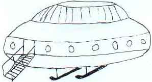

Dessin d'Alfred Burtoo de l'appareil dans lequel il fut pris à bord

Alfred Burtoo (77 ans), accompagné de son chien, s'est installé au bord du canal de Basingstoke, Aldershot, Hampshire,
Royaume Uni, non loin d'une caserne de l'Armée britannique, afin d'y pêcher toute la nuit. Il entend
une horloge proche sonner et s'apprête à boire une tasse de thé sorti de sa bouteille thermos.
Burtoo voit une lumière brillante descendre de ce qu'il prend au départ pour un hélicoptère de l'armée. Il atterrit
sur le chemin de halage du canal, situé à quelque distance et la lumière s'éteint. En l'espace de quelques mn, il
est approché par 2 êtres faisant 1,50 m de haut, portant des combinaisons verdâtres et des visières sur le visage.
Son chien, sur la défensive, gronde contre eux. Ils lui font signe de les suivre et il s'exécute (ayant 77 ans,
je n'avais plus grand chose à perdre devait expliquer Burtoo par la suite). Le trio arrive jusqu'à un objet
arroni dépassant du chemin surplombant le canal et Burtoo se baisse pour en franchir le seuil. Une fois à
l'intérieur de l'engin, on lui demande son âge et on le prie dans un anglais mal assuré de se tenir sous une
lumière ambrée, ce qu'il fait. L'un des êtres lui dit au bout de quelques mn : Vous pouvez vous en aller. Vous
êtes trop vieux et trop infirme pour servir notre dessein. A , lorsqu'il retourne à sa canne à
pêche, son chien se comporte normalement, mais son thé est froid. Peu après, il voit la lumière de l'ovni s'élever
dans le ciel puis filer à une allure vertigineuse.
Comme 3 ans plut tôt, de nombreuses personnes attendent l'arrivée d'un ovni à
Cergy-Pontoise, annoncée par Frank Fontaine. Encore en vain.
À Bourmont (Haute Marne), suite à plusieurs observations
de phénomènes lumineux faites de nuit de la veille et l'avant-veille, 1 personne décide d'aller observer aux
jumelles ce qui se passe sur une colline. Plusieurs heures plus tard ses proches le retrouvent chez lui hébété,
portant des blessures sur le corps et fortement traumatisé. Il affirme avoir été happé par une boule de feu
jaune-orangé puis être retombé quelques kilomètres plus loin. Son discours incohérent et ses blessures incitent sa
famille à l'hospitaliser L'enquète démontrera que ces phénomènes lumineux ont pu réellement avoir lieu : en effet sur cette colline passe une ligne à
haute tension d'EDF où
ont pu se produire des arcs électriques. Le témoin a effectivement pu être victime d'un choc électrique du fait de la présence de la ligne HT (60 KV) et du temps très orageux mais l'explication de "l'enlèvement" semble peu crédibleGEPAN: PAN classé
B.